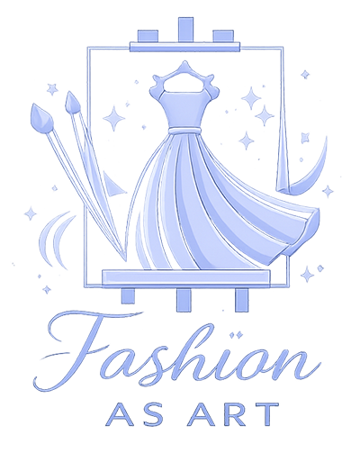
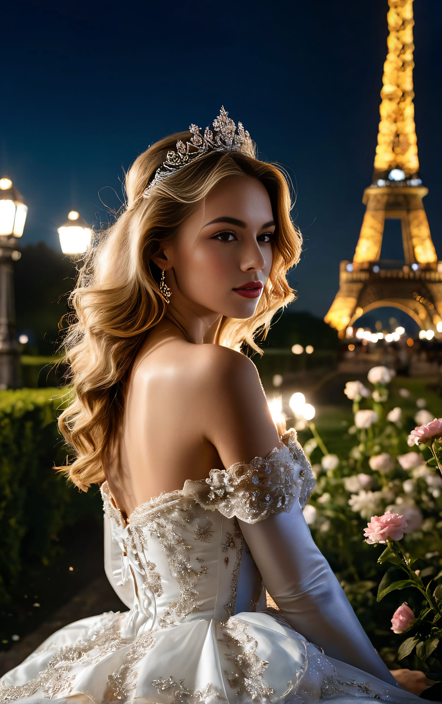
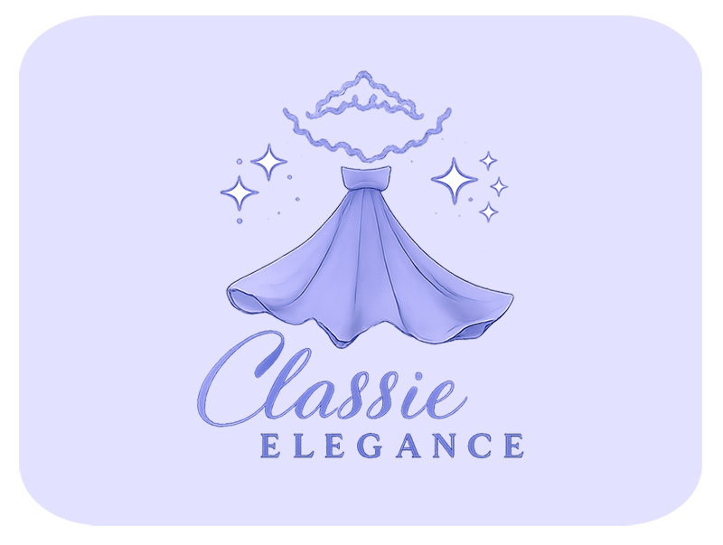
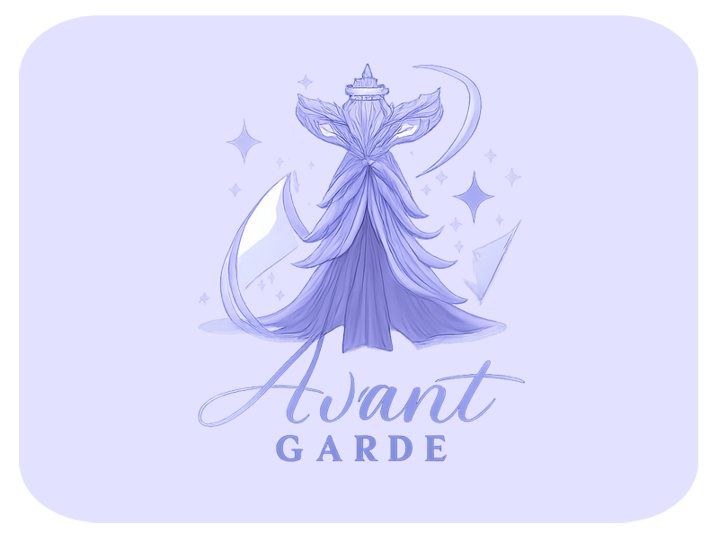

The Met Gala is the world’s most prestigious fashion event, held annually at The Metropolitan Museum of Art in New York City. It marks the grand opening of the museum’s Costume Institute exhibition. Known for its exclusive guest list, the event brings together celebrities, designers, and cultural icons. Each year features a unique theme that inspires bold, artistic, and story-driven outfits.

The Met Gala transforms clothing into powerful art pieces. Designers use the theme as a creative canvas to express culture, emotion, and innovation.
Attendance is highly curated, making the Met Gala one of the most exclusive events in the world. Each appearance is carefully styled and widely celebrated across global media.

This interactive fashion experience encourages children to explore creativity through choice and imagination. Designing outfits step by step helps develop decision-making, focus, and visual awareness. Understanding colors, textures, and styles builds an early sense of fashion and self-expression. As children experiment freely, they gain confidence in their ideas and personal taste. Learning through play transforms fashion into a powerful tool for growth.
Fashion is more than appearance—it’s a powerful form of expression and learning. Through interactive design and visual storytelling, users explore style with purpose. This section highlights how fashion nurtures creativity, confidence, and awareness. Each element encourages thoughtful choices and imaginative exploration.
Fashion design sparks imagination and encourages original ideas. Experimenting with styles helps users think creatively and explore new concepts. Visual choices strengthen pattern recognition and artistic thinking. Creativity learned through fashion extends into everyday problem-solving.
Understanding colors and fabrics enhances visual sensitivity. Mixing textures teaches balance, contrast, and harmony. This awareness builds a refined sense of aesthetics over time. It helps users recognize style details with confidence.
Fashion allows individuals to communicate identity without words. Choosing outfits empowers users to express emotions and personality. This freedom boosts self-confidence and individuality. Style becomes a personal language of creativity.
Completing designs builds a sense of achievement and pride. Step-by-step interaction improves focus and patience. Confidence grows as users trust their decisions. Fashion becomes a positive tool for personal growth.
Iconic Outfit Styles celebrate the most unforgettable looks inspired by the Met Gala runway. Each style blends creativity, craftsmanship, and bold self-expression into a visual statement. From timeless elegance to daring avant-garde designs, every outfit tells a story. Luxurious fabrics, dramatic silhouettes, and thoughtful details define these standout creations. These styles don’t just follow fashion—they shape it. Because iconic looks are remembered long after the spotlight fades.

Clean silhouettes, tailored details, and refined textures create a look that never fades. Rooted in tradition yet elevated with modern finesse, it celebrates fashion’s most enduring style. Because true elegance is always in style.

Unconventional materials, sculptural forms, and fearless creativity take center stage. Every design is an artistic statement rather than a trend. This is fashion for those who lead, not follow.
Bold concepts, theatrical details, and striking contrasts bring the theme to life. Every look is designed to captivate, provoke emotion, and command attention. Because at the Met Gala, drama isn’t optional—it’s essential.